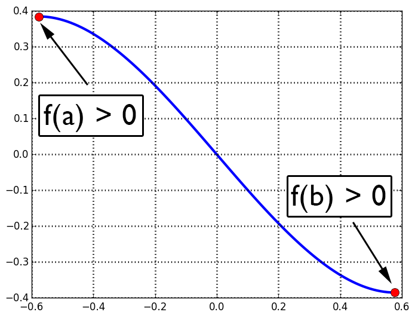

| « 3.3 | up | 3.5 » |
3.4 — Real Zeros of Polynomial Functions
Basic Integer Division Terminology
Suppose $f$ and $d$ are integers with $f \gt d$. Then there exist integers, $q$ and $r$, with $r \lt d$ such that: \begin{align*} \frac{f}{d} &= q + \frac{r}{d} \\ f &= dq + r \end{align*}$q$ called is the quotient, $d$ the divisor, and $r$ the remainder. When is the remainder zero?
For example, \begin{align*} \frac{5}{2} &= 2 + \frac{1}{2} \\ 5 &= 2 \times 2 + 1 \end{align*} but, \begin{align*} \frac{4}{2} &= 2 \\ \frac{4}{2}&= 2 + \frac{0}{2} \end{align*}
Division of Polynomials
Division of polynomials works analogously.Suppose $f(x)$ and $d(x)$ are polynomials with $\text{degree}(f) \gt \text{degree}(d)$. Then there exist polynomials, $q(x)$ and $r(x)$ with $\text{degree}(r) \lt \text{degree}(d)$ such that: \begin{align*} \frac{f(x)}{d(x)} &= q(x) + \frac{r(x)}{d(x)} \\ f(x) &= d(x)q(x) + r(x) \end{align*}
Long Division Algorithm for Polynomials
Find the remainder and quotient when $f(x) = x^2-1$ is divided by $d(x) = x+2$.
$q(x) = x-2$
$r(x) = 3$
$r(x) = 3$
Find the remainder and quotient when $f(x) = x^2-1$ is divided by $d(x) = x+1$.
$q(x) = x-1$
$r(x) = 0$
$r(x) = 0$
Two of the factors of $f(x)=4x^4 + x^3 - 44x^2 + 13x + 6$ are $(4x+1)$ and $(x-3)$. What is another factor?
$x^2+3x-2$
The Remainder Theorem
If $f(x)$ is a polynomial, and $d(x)=x-c$, then $$ \frac{f(x)}{d(x)} = q(x) + \frac{r}{d(x)} $$ where $r$ is some constant. Furthermore, $$ f(x) = d(x)q(x) + r $$ and $$ f(c) = (c-c)q(x) + r = r $$
Find the remainder when $x^5 + 3x^4 - 2x^2 + x$ is divided by $x-2$.
$r = f(c) = f(2) = 74$
The Factor Theorem
If $f(x)$ is a polynomial, then $(x-c)$ is a factor of $f$ if and only if $f(c) = 0$.
Which of the following functions has $(x+2)$ as a factor?
- $f(x) = 6x^3 + 15x^2 + 3x + 6$
- $f(x) = 4x^3 - 10x^2 + 2x + 4$
- $f(x) = 6x^3 - 8x^2 - 10x + 4$
- $f(x) = 4x^3 + 6x^2 - 6x - 4$
Option 4.
Find $k$ such that $k - 2x -kx^2 - x^3$ has a factor of $(x-2)$.
$k = -4$
Find the leading coefficient, $A$, of the function, $f(x) = A(x-r_1)(x-r_2)(x-r_3)$, whose zeros are $3,2,-1$, and $f(4) = -5$.
$A = -\frac{5}{36}$
Rational Zeros Theorem
Suppose $f(x) = a_n x^n + a_{n-1} x^{n-1} + \ldots + a_1 x + a_0$ is a polynomial whose coefficients, $a_n, \ldots,a_1,a_0$ are integers. If $p,q$ are integers and $f(\frac{p}{q})=0$, then $p$ must be a factor of $a_0$ and $q$ must be a factor of $a_n$.
Find ALL potential zeros (according to the Rational Zeros Theorem) for the function, $f(x) = 9x^5 + 8x^4 - 3x^3 - 6x +3$.
$\pm \frac{1}{9}, \pm \frac{1}{3}, \pm 1, \pm 3$
Intermediate Value Theorem
Suppose $f$ is a continuous function on the interval, $[a,b]$. If the sign of $f(a)$ differs from the sign of $f(b)$, then there exists at least one number (call it $c$) contained within the interval such that $f(c)=0$.
Select ALL the intervals for which the Intermediate Value Theorem implies that $f(x) = x^3 - 2x^2 - 9x + 18$ has a zero. For the intervals that are NOT selected, does the Intermediate Value Theorem imply there are no zeros on that interval?
- $[0,4]$
- $[-4,0]$
- $[-4,4]$
- $[0,1]$
- No conclusion.
- At least one zero.
- At least one zero.
- No conclusion.